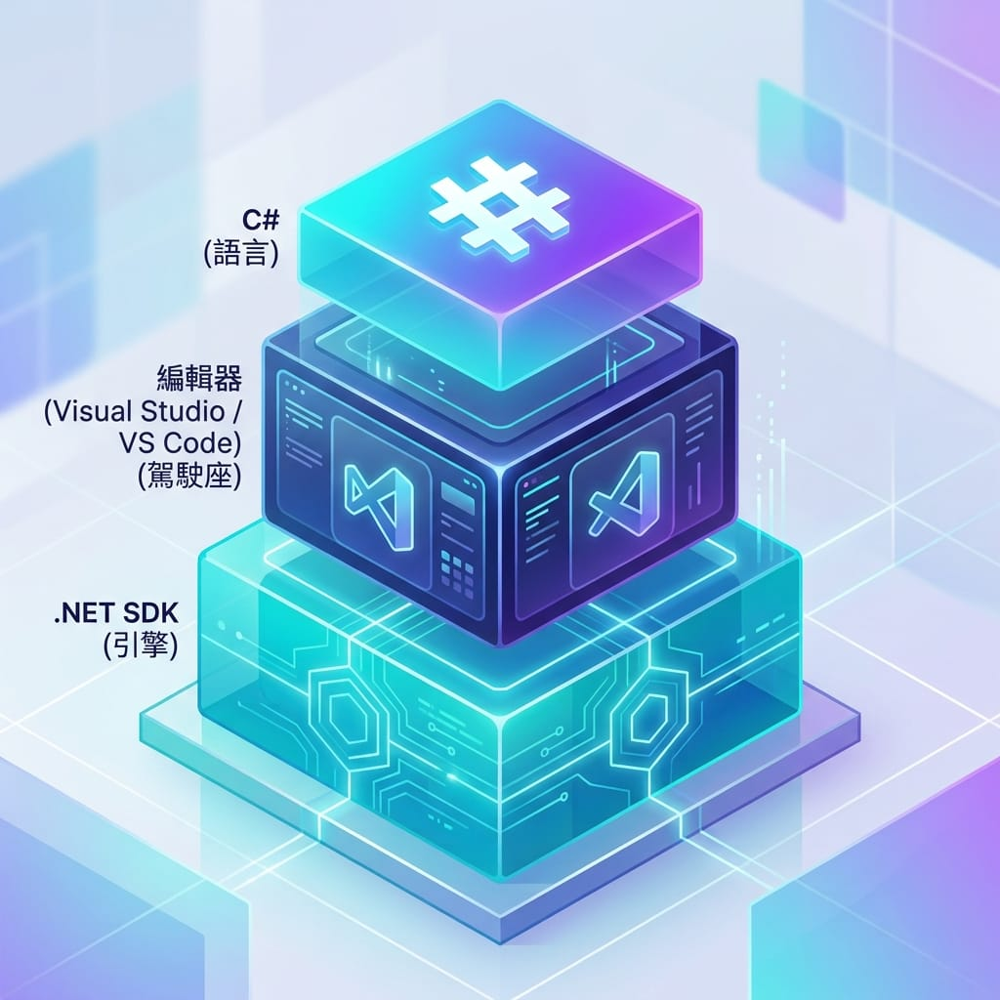

在上一篇總覽裡，我們把 C# 能做什麼、要裝什麼看過一輪了。從這篇開始，正式動手。
第一關不是寫程式，而是把開發環境準備好。好消息是：C# 的環境門檻比 iOS 低很多，任何一台 Windows、Mac 或 Linux 電腦都能開始，而且全部免費。照著做，一個下午就能跑出你的第一支程式。
這篇會帶你完成四件事：搞懂要裝哪些東西、安裝 .NET SDK、安裝並認識 Visual Studio、建立專案跑出 Hello World。
一、要裝哪些東西？
寫 C# 需要兩樣東西，先把觀念理清楚，裝起來就不會亂：
- .NET SDK：C# 的「開發套件」，裡面有編譯器（把你寫的程式碼變成能執行的東西）和執行環境（讓程式跑起來）。沒有它，程式無法運作。這是必裝的核心。
- 一個編輯器或 IDE：你寫程式碼的地方。有兩個主流選擇，等一下細說。
打個比方：.NET SDK 是引擎，編輯器是駕駛座。引擎一定要有，駕駛座則有不同款式可選。
編輯器怎麼選？Visual Studio vs Visual Studio Code
這兩個名字長得很像，是最多新手搞混的地方，先講清楚——它們是兩個不同的軟體：
| Visual Studio | Visual Studio Code | |
|---|---|---|
| 類型 | 完整 IDE（大型整合工具） | 輕量編輯器 |
| 平台 | Windows、Mac | Windows、Mac、Linux |
| 體積 | 大，功能最齊 | 小，開得快 |
| 內建除錯/專案管理 | 開箱即用 | 要裝 C# 擴充套件 |
| 適合 | 新手首選（Windows） | 習慣輕量工具、或用 Mac/Linux |
我的建議：如果你用 Windows，直接選 Visual Studio Community 版（免費），因為它把編譯、除錯、提示、專案管理全整合好了，新手不用自己東湊西湊。如果你用 Mac 或 Linux，或偏好輕量工具，就用 VS Code 加上 C# 擴充套件。
這篇主要以 Windows + Visual Studio 示範（最多人用這組）。VS Code 的差異我會在對應段落補充。
二、安裝 .NET SDK
先裝核心引擎 .NET SDK。
- 到 .NET 官方網站的下載頁（搜尋「dotnet download」就能找到
dotnet.microsoft.com）。 - 下載 SDK（不是只有 Runtime——Runtime 只能跑程式、不能開發，我們要能開發的 SDK）。
- 選 LTS 版本。這裡要稍微說明一下版本：
- LTS（長期支援）：穩定、支援期長，新手首選。
- STS / 最新版：功能較新但支援期較短。
- 截至查證時（2026-10-11），學習用途選當前的 LTS 版即可，實際版本號請以 .NET 官方下載頁為準。
- 下載後執行安裝檔，一路照預設按下去就好。
確認裝好了沒：打開終端機（Windows 的「命令提示字元」或 PowerShell、Mac 的「終端機」），輸入這行：
dotnet --version如果印出一組版本號（例如 8.0.xxx 這樣的數字），就代表安裝成功了。如果顯示「找不到指令」，通常是沒重開終端機，關掉重開再試一次。
小提醒：裝了 Visual Studio 的話，其實它安裝過程也會幫你把 .NET SDK 裝好。但先獨立裝一次 SDK、學會用 dotnet --version 確認，對理解整個環境很有幫助。
三、安裝與認識 Visual Studio
接著裝 Visual Studio（以下簡稱 VS）。
- 到 Visual Studio 官網，下載 Community 版——這是給個人、學生、小型團隊的免費版本，功能對學習綽綽有餘。
- 執行下載的安裝程式，它會先問你要裝哪些「工作負載（Workload）」。這一步很重要：勾選「.NET 桌面開發」（.NET desktop development）。這個工作負載包含我們寫主控台程式和桌面程式需要的東西。
- 其他工作負載（像 ASP.NET 網頁開發、遊戲開發等）現在用不到，之後要用再回來加裝即可。
- 按安裝，等它下載安裝完成（檔案不小，建議接電源、用穩定網路）。
認識介面：第一次打開 VS 會有點眼花，別緊張，你不用一開始就全懂。先認得幾個主要區塊，用到自然會熟：
- 方案總管（Solution Explorer）：通常在右側，列出你專案裡所有的檔案。要打開哪個就點它。
- 編輯區（中間）：寫程式的主場，程式碼都在這裡打。
- 輸出 / 錯誤清單（底部）：編譯訊息、錯誤、程式印出的結果會出現在這。抓 bug 時很重要。
- 頂部的 ▶ 執行鈕（通常寫著專案名或「啟動」）：按下去就會編譯並執行你的程式。
介面看起來很多，但現階段你只要記得三件事就夠開始：找檔案、中間寫程式、上面按執行。
四、建立第一個專案：Hello World
環境都備好了，來跑出經典的第一支程式。
用 Visual Studio：
- 打開 VS，選「建立新專案（Create a new project）」。
- 在範本清單搜尋並選擇「主控台應用程式（Console App）」，按下一步。
- 主控台程式就是在黑底視窗（終端機）裡用文字輸入輸出的程式，最單純、最適合學語言基礎。
- 填專案名稱（例如
HelloWorld）、選存放位置，按下一步，建立。 - VS 會幫你產生一個專案，裡面有一個
Program.cs檔案。
打開 Program.cs，你會看到類似這樣的程式碼（新版 .NET 的範本很精簡）：
// 你的第一支 C# 程式
Console.WriteLine("Hello, World!");這行 Console.WriteLine(...) 的意思就是「在主控台印出一行文字」。按下頂部的 ▶ 執行，就會跳出一個視窗，印出 Hello, World!。
恭喜，你剛剛跑了人生第一支 C# 程式。🎉
試著改一下：把引號裡的文字換成你想說的話，例如：
Console.WriteLine("哈囉，我是智慧喵，開始學 C# 了！");再按一次執行，看看輸出有沒有跟著變。這種「改一點、跑一次、看結果」的循環，就是學程式最有效的方式。
用 VS Code 的話：流程稍微不同——先裝好 C# 擴充套件（C# Dev Kit），然後開一個資料夾，在終端機執行 dotnet new console 建立專案、dotnet run 執行。指令式的操作一開始沒 VS 直覺，但更能看清楚底層發生什麼事。
關於那段精簡的程式碼：你可能在別的教材看過落落長的class Program、static void Main(string[] args)包起來的寫法。那是舊式寫法，新版 .NET 用「頂層語句」簡化掉了，兩者做的事一樣。等我們學到方法與類別時，你自然會懂那層包裝在做什麼。
五、認識你的工具：三層關係
最後把這篇裝的東西，用一張關係圖收尾：

- C#：程式語言，你用來寫邏輯的工具，決定程式「怎麼運作」。
- 編輯器（VS / VS Code）：你寫 C# 的地方，提供語法提示、除錯、執行等便利功能。
- .NET SDK：最底層的引擎，負責把 C# 編譯成能執行的程式，並提供執行環境。
它們的關係是這樣堆疊的：.NET SDK（引擎）→ 編輯器（駕駛座）→ C#（你寫的程式）。這篇我們把前兩層準備好了，接下來就是往上學語言本身。
這一步大約要花多久？
準備環境本身不難，時間主要花在下載：
- 安裝 .NET SDK：十幾分鐘（含下載）。
- 安裝 Visual Studio：半小時到一小時（主要在等下載，檔案較大）。
- 建專案、跑出 Hello World：幾分鐘。
- 到處點、熟悉介面：抓一兩天慢慢摸。
這階段的目標很單純：能建立一個主控台專案、按執行、在視窗看到自己印出的文字。做到這一步，你的開發環境就正式上線了。
下一篇
環境備妥後，下一篇進入 C# 語法基礎——變數與型別、運算子、以及 if、for、while 等流程控制。這是真正開始寫程式邏輯的地方，也是需要多花點時間扎實練的一篇。
學程式別跳過基礎，一步一步來最快。我們下篇見。🐾
系列導覽
- 📚 回到 C# 程式設計完整教學 全系列目錄
- ⬅️ 上一篇：C# 是什麼、能做什麼？從零開始的學習地圖（總覽）
- ➡️ 下一篇：C# 語法基礎：變數、型別、運算子與流程控制